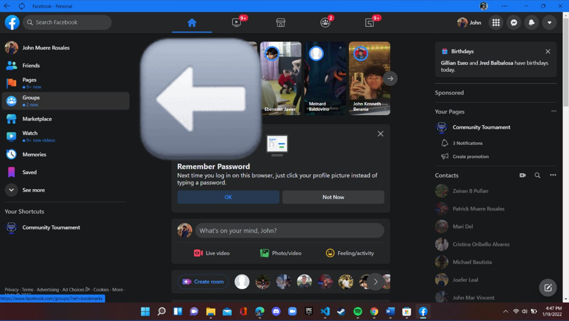

The Right Mindset and Way to use Facebook
Many of us spend our time on social media websites, and it is not actually too bad if you effectively use that time to learn new things which you can use to improve yourself. As we commit ourselves that we wanted to grow and develop ourselves so that we may acquire what our hearts desire, we will find ways to improve ourselves even in the smallest form as we do it continuously and non-stop growing. Facebook is a great software technology that can be used in great ways if done with a dedicated mind. First, you must find what you really want to do, and given the uses of this software; you will find a way to be more successful by utilizing this technology. With the diversity and community supporting Facebook, you will find a place you want to be and will be comfortable with.
EFFECTIVE USES OF FACEBOOK FOR PERSONAL AND PROFESSIONAL USE:
HOW TO USE THE EFFECTIVE USES OF FACEBOOK FOR PERSONAL AND PROFESSIONAL USE:
STEP 1. INSTALL THE FACEBOOK APPLICATION

STEP 2. UTILIZE THE USES OF FACEBOOK ON THE LEFT SCREEN
This is where we can search what we need and want especially the things mentioned above regarding the uses of Facebook for our personal and proffesional lives. This is where we can search everything we need regarding all aspects of life and create most of the things we need.
This is the area that is related to Facebook pages. Here we can create a Facebook page based on our interest and objectives that will be helpful towards our career especially if you are in the CS or IT field. It is usually reccommended by those who have experiene to create your own page, channel, or website that will serve as your work so the employer may know you better.
This is the area that is related to Facebook Groups. We can create a Facebook group or join based on our needs and interest. As you can see towards our example picture, I have joined IT groups, some related to programming languages so that even if I use Facebook there will be a thing in my newsfeed that is informative and can learn new things from it. It is like a community of same-minded people that is very beneficial towards our growth. It is reccommended that we join groups that are helpful towards our future careers!
This is the area that is related to Facebook MarketPlace. This is where we can buy most of the things we want. There is a search button and categories below where we can find our interest with. This Marketplace redirects us to chat towards the sellers and proceed with the transactions. This is very helpful as it is easily accesible and has a broad variety of products we can buy or sell with.
Inspiration for the Chosen Software Technology
One of the things I do love the most is reading, as I learn a lot especialy if I am reading the lives of other people. The life of Mark Zuckerberg, known for co-founding the tech giant Facebook has been inspiring me for years as he became a billionaire. Did you know that he didn't finished his college degree when he created this amazing technology called Facebook? However many doesn't know that he is quite active during his high school days where he worked under a company named Intelligent Media Group to build a music player called the Synapse Media Player. He also created some computer games that kids played as he began using computer and writing software during his middle school days. All of his success right now didn't came from a fruit falling into the ground, it was due to all his hardwork. When he started to plan and discuss creating facebook to his friends, he invited 5 people to his dorm, however only 2 people showed up. If he lost his confidence back then as less than half of the people he invited showed up then we will not have facebook accounts which is very helpful towards our daily lives in all aspects.
We can see that he loves what he is doing and worked hard in order to achieve what he has right now. Next is we can see that he is starting to make his new project as he changed the name of his company from facebook to metaverse. Facebook is known as a social media that connects people visually using the internet, metaverse on the other hand focuses on creating a new world (virtually) where people can connect more of like a character in a video game in an open world where they can go anywhere, conduct virtual meetings similar to face to face in reality as we can move our avatars inside that virtual world and can change places unlike the current zoom where we can only see ourselves and changes the background behind us. We can see that despite the great success he has achieved, he is not stopping and continues to exlore more the potential of technology spending his time and effort to succeed in whatever he is planning. Lastly, he is quite inspiring as he is also known for being a philanthropist where he and his wife pledged to donate 99% of their Facebook shares to the Chan Zuckerberg Initiative, an organization where its main area is to help Science, Education, Justice, Opportunity, Health. Its primary goal is to build a more inclusive, just, and healthy future for everyone.